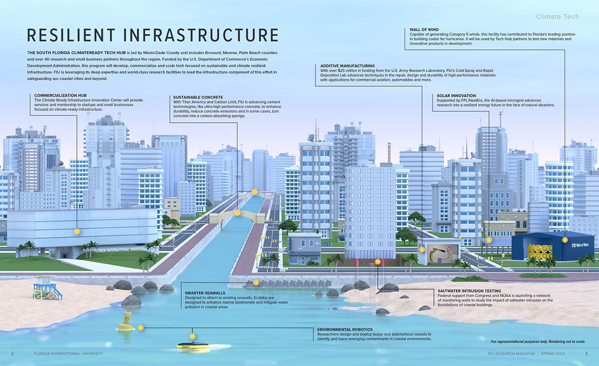

Resilient Infrastructure is an advocacy that advocates more sturdy, enduring and better quality building and materials use in order to deal with
like climate change.
Incorporating climate risk assessments into the planning stages ensures infrastructure is prepared for future threats.
Protecting ecosystems, such as mangroves or wetlands, offers natural flood mitigation and enhances resilience.
Retrofitting existing buildings and building new ones to higher standards ensures they can handle greater stresses
Understanding that critical infrastructure (transport, water, digital) is interdependent and requires holistic management.